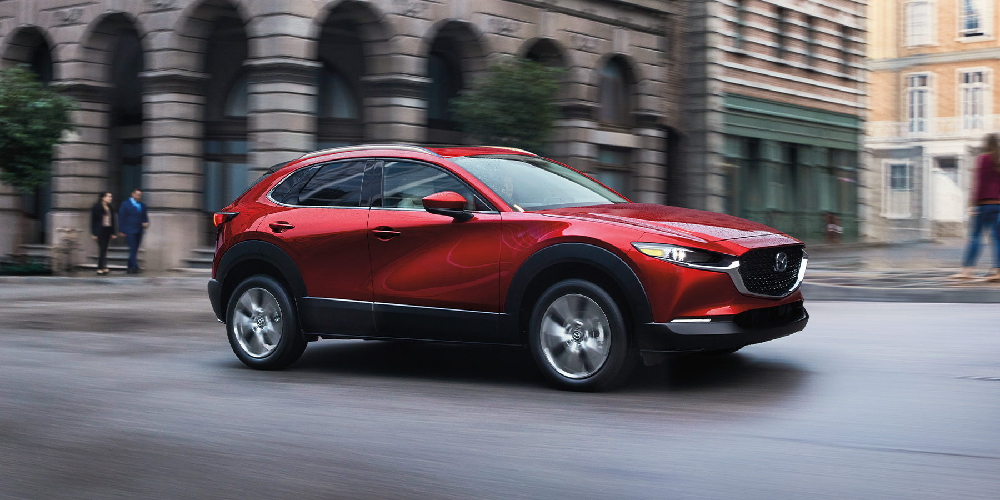
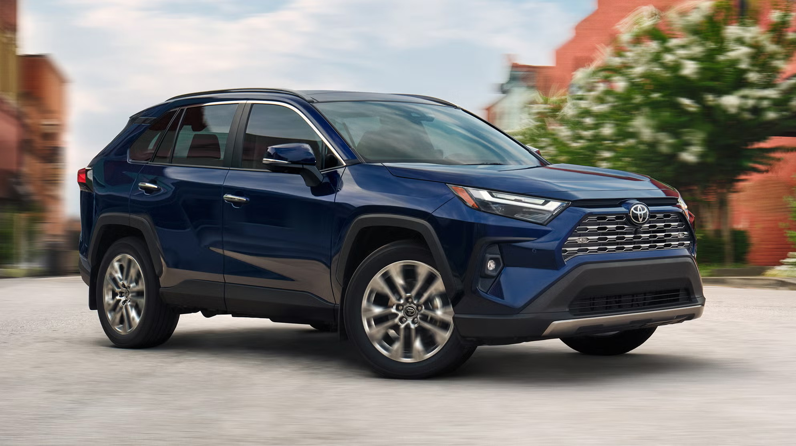
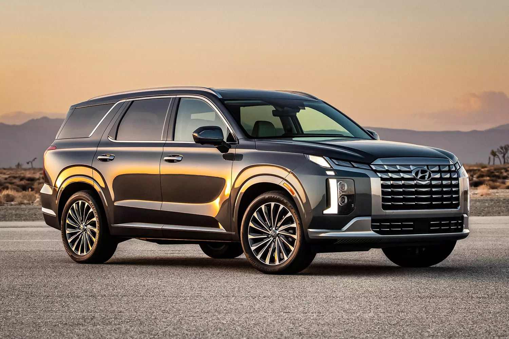
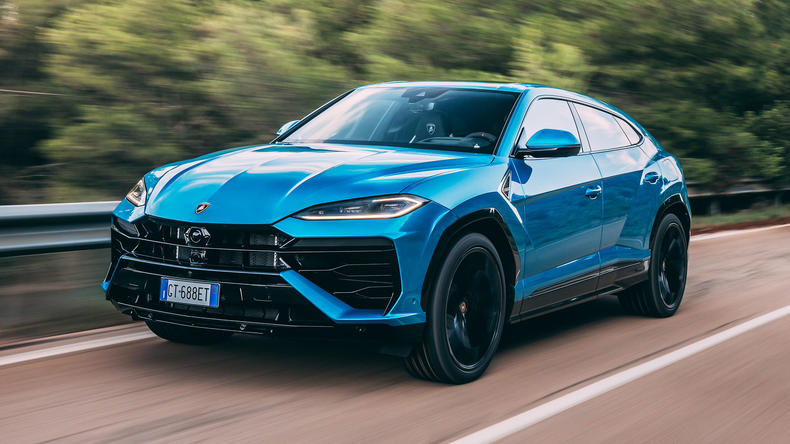

Кузов КРОССОВЕР

Кроссовер (Crossover, CUV - Crossover Utility Vehicle) – это автомобиль, сочетающий комфорт легкового авто и проходимость внедорожника. Он отличается повышенным клиренсом, вместительным салоном и универсальностью, что делает его популярным среди семей и любителей активного отдыха.
Основные характеристики:
- Умеренный дорожный просвет – выше, чем у седанов и хэтчбеков, но ниже, чем у внедорожников.
- Универсальная платформа – чаще всего основан на базе легкового автомобиля.
- Передний или полный привод – многие модели имеют AWD для лучшей проходимости.
- Комфортный салон – больше места для пассажиров и багажа по сравнению с легковыми авто.
- Экономичные двигатели – чаще всего турбомоторы или гибридные версии.
Классификация:

Mazda CX-30

Toyota RAV4
- Компактные кроссоверы – небольшие городские модели с хорошей экономичностью (Toyota C-HR, Hyundai Kona, Mazda CX-30).
- Среднеразмерные кроссоверы – баланс комфорта, мощности и проходимости (Toyota RAV4, Honda CR-V, Volkswagen Tiguan).
- Полноразмерные кроссоверы – просторные и мощные модели с 7 местами (Hyundai Palisade, Toyota Highlander, Kia Sorento).
- Премиальные кроссоверы – дорогие модели с люксовыми технологиями (BMW X5, Mercedes GLE, Audi Q7).
- Спортивные кроссоверы – версии с мощными двигателями и агрессивным дизайном (Porsche Macan, BMW X3 M, Lamborghini Urus).

Hyundai Palisade

Lamborghini Urus
Преимущества:
- Универсальность – подходит как для города, так и для загородных поездок.
- Комфортный салон – больше места для пассажиров и багажа.
- Лучше проходимость, чем у легковых авто – увеличенный клиренс и опциональный полный привод.
- Экономичность (в сравнении с внедорожниками) – меньше расход топлива, чем у полноразмерных SUV.
Недостатки:
- Не полноценный внедорожник – уступает по проходимости классическим SUV.
- Более высокий расход топлива, чем у седанов и хэтчбеков.
- Более высокая цена, чем у легковых авто – даже компактные кроссоверы часто дороже седанов того же класса.
Кроссовер – это идеальный выбор для тех, кому нужна универсальность, комфорт и немного повышенной проходимости. Это компромисс между легковыми авто и внедорожниками, который подойдёт для большинства водителей.